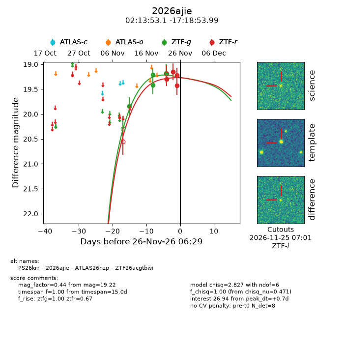
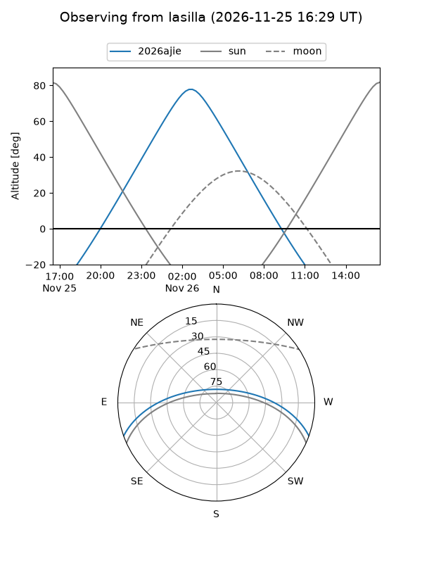
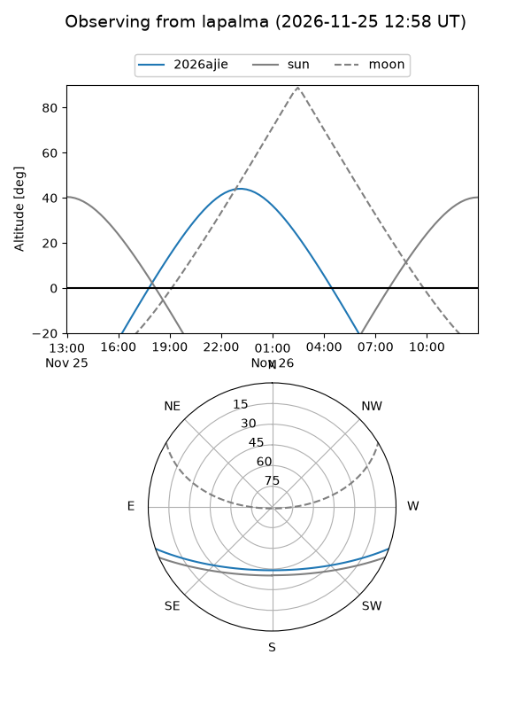
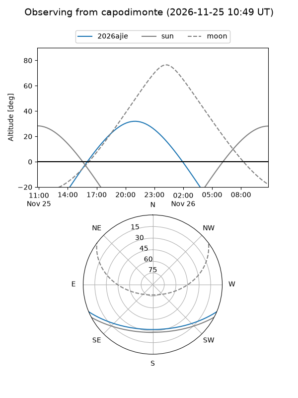
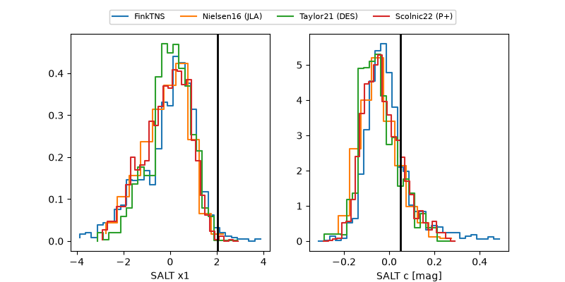

2026ajie
Target 2026ajie at 2026-11-26 06:31
Aliases and brokers:
FINK-ZTF: ztf.fink-portal.org/ZTF26acgtbwi
Lasair-ZTF: lasair-ztf.lsst.ac.uk/objects/ZTF26acgtbwi
ALeRCE-ZTF: alerce.online/object/ZTF26acgtbwi
YSE-PZ: ziggy.ucolick.org/yse/transient_detail/2026ajie
TNS name: wis-tns.org/object/2026ajie
Direct TNS query: direct search
alt names
ZTF26acgtbwi (ztf,fink_ztf)
2026ajie (tns,yse)
ATLAS26nzp (atlas)
PS26krr (panstarrs)
Coordinates:
equatorial (ra, dec) = 33.4712,-17.31500
equatorial (HMS+DMS) = 02:13:53.09,-17:18:53.99
galactic (l, b) = (189.9444,-68.58806)
Flags:
peak dt: +0.7
Photometry:
last ztfg=19.18, ztfr=19.22
4 ztfg, 4 ztfr detections
Lightcurve

Visibility



Additional plots
